Santé & médical
137 entreprises · 171 articles · 8 magazines
Articles
 Interview
InterviewEPHJ 2026 – Un salon unique au monde par son positionnement
Interview d'Alexandre Catton, directeur de l'EPHJ
Publireportage
Econs SA – Consulenza e progettazione in campo ambientale e della salute delle persone
Radon, substances nocives, sites contaminés et énergie
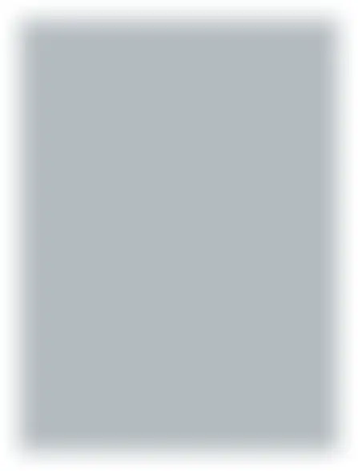
InterviewIncontournable, le salon EPHJ annonce une belle édition 2025 !
Interview d'Alexandre Catton, directeur de l'EPHJ
Éditorial
Le défi de faire entrer l'hôpital dans une nouvelle ère
Éditorial de Marc Devaud, directeur général (version allemande : Die Herausforderung, das Spital in eine neue Ära zu führen)
Interview
« Pour motiver les gens, il faut leur donner des perspectives »
Entretien avec Aline Schuwey, directrice des soins
Interview
L'amélioration continue de la gestion opérationnelle par la digitalisation
Entretien avec Stéphane Brand, directeur des opérations
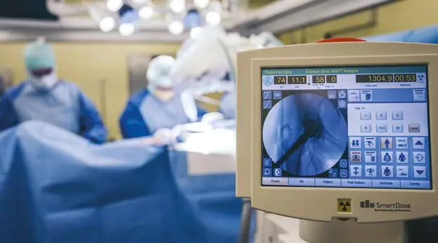
InterviewKlinik für Orthopädische Chirurgie und Traumatologie HFR
Interview mit Moritz Tannast, Professor und Chefarzt der Klinik für Orthopädische Chirurgie und Traumatologie
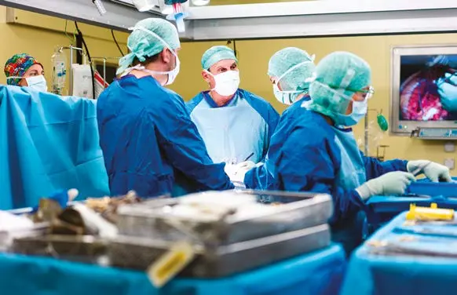
InterviewKlinik für Allgemeine Chirurgie HFR
Interview mit Bernhard Egger, Professor und Chefarzt der Klinik für Allgemeine Chirurgie
Interview
L'analyse médicale digitalisée d'un bout à l'autre
Entretien avec Dr Jean-Luc Magnin, responsable du laboratoire
Interview
Il faut d'urgence préserver les urgences
Le professeur Ribordy tire la sonnette d'alarme
Interview
« Integrative Pädiatrie schafft ein riesiges Potenzial »
Interview mit Benedikt Huber, Leitender Arzt Pädiatrie
Interview
Die moderne Onkologie: Präzise und personalisiert
Im Gespräch mit Alessandra Curioni-Fontecedro, Professorin und Abteilungschefärztin Onkologie
Interview
Les urgences pédiatriques face à une fréquentation en augmentation
Entretien avec Dre Céline Ritter Schenk, médecin adjointe, pédiatrie
Interview
Les centres de santé, l'élément de proximité dans la structure de l'HFR
Entretien avec Dre Anne-Catherine Barras, médecin-cheffe adjointe, médecine interne générale
Interview
La néphrologie à l'HFR
Une large palette de soins et un suivi – Entretien avec Prof. Olivier Bonny, médecin-chef d'unité néphrologie
Interview
La césarienne douce pour mieux mettre au monde
Une option qui a fait ses preuves – Entretien avec Dr Nordine Ben Ali, médecin-chef adjoint en gynécologie et obstétrique
Interview
Klinik für Gynäkologie und Geburtshilfe HFR
Interview mit PD Dr. Dorothea Wunder, Leitende Ärztin Gynäkologie und Geburtshilfe
Interview
Das Mikrobiom von Kindern hat einen Einfluss auf ihre Gesundheit
Interview mit PD med. Petra Zimmermann, PhD, Stellvertretende Chefärztin Pädiatrie und Leiterin Kinderinfektiologie
Interview
Un master orienté médecine de famille
Collaboration fructueuse entre l'HFR et l'Université de Fribourg – Entretien avec Dr Antoine Meyer
Interview
Les enjeux de la réadaptation
L'HFR dans la réflexion et dans l'action – Entretien avec Dr Titus Bihl-Lainsbury
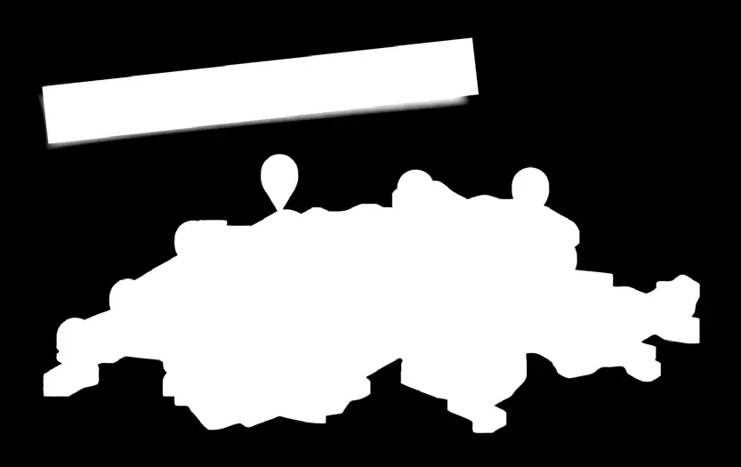
PublireportageLa Caisse des Médecins – Une coopérative pour gérer la facturation des professionnel·les de santé
Company profile
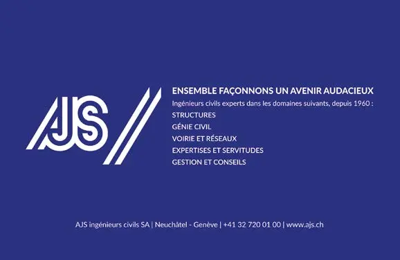
PublireportageBP-Conseils – Une collaboration constructive avec les institutions de soins
Company profile
Publireportage
Arthrex Swiss AG – Fournisseur d'implants et d'instruments chirurgicaux
Company profile (version allemande : Hersteller von Implantaten und chirurgischen Instrumenten)
Publireportage
Kessler & Co SA – Experts en gestion des risques et assurance pour les acteurs de la santé
Company profile
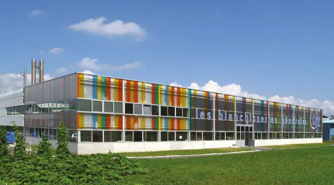
PublireportageLes Blanchisseries Générales LBG SA – Pour du linge propre et hygiénique
Publireportage (résumé allemand inclus)
Publireportage
Les Ligues de santé – Fédérer les aides aux personnes souffrant de maladies chroniques
Company profile (version allemande : Gesundheitsligen – Bündelung von Hilfsangeboten für chronisch kranke Menschen)
Publireportage
Swisscom – Nouvel exploitant de l'infrastructure IT de l'hôpital fribourgeois d'ici la fin de l'année
Company profile (version allemande : Neuer Betreiber der IT-Infrastruktur des Freiburger Krankenhauses)
Publireportage
Trigonorm SA – Spécialiste des rayonnages modulables
Company profile
Publireportage
VitalRh – À la recherche de personnel médical pour le marché suisse
Company profile
Publireportage
L'étrive – Une solution sociale pour la sous-traitance horlogère
La Fondation L'étrive à Bienne célèbre plus de 40 ans d'engagement en faveur de l'inclusion sociale
Publireportage
PROTOFIL SÀRL – Précision et complexité au bout du fil
Électroérosion à fil et micro-usinage à la vallée de Joux
 Interview
InterviewEPHJ – En 2022, EPHJ fête ses 20 ans d’existence et promet une édition très spéciale
Interview d’Alexandre Catton, directeur du Salon EPHJ / Interview with Alexandre Catton, Director of the EPHJ trade show
Publireportage
Admo Plastique SA
Quarante ans d’injection thermoplastique de précision au Locle
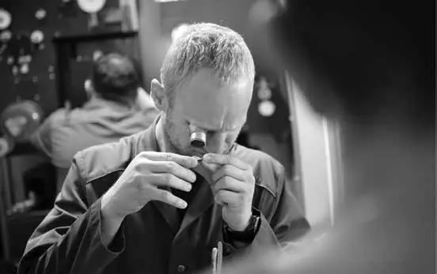
PublireportageProtofil Sàrl – Précision et complexité au bout du fil
Électroérosion à fil et micro-usinage à la Vallée de Joux
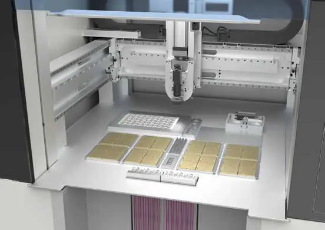
PublireportageRessorts Industriels SA – Des ressorts de haute précision jusque dans les mouvements à complication
RISA à Courgenay
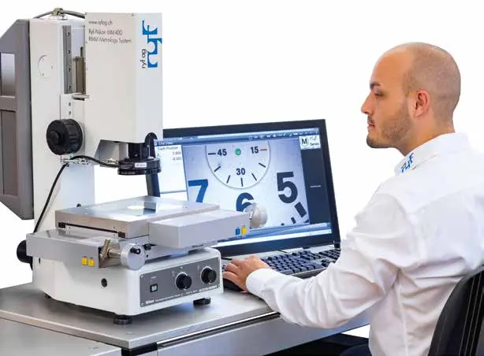
PublireportageRyf AG – Les experts de la microscopie industrielle
Microscopes et systèmes de mesure à Granges
Interview
Salon EPHJ – Le monde de la haute précision
Entretien avec Alexandre Catton, directeur du Salon
 Interview
InterviewRyf AG – L’évidence de la qualité
Entretien avec Daniel Ryf, directeur général
 Publireportage
PublireportageBA Consulting SA – L’ingénierie conseil des installations sanitaires et apparentées
Company profile
 Interview
InterviewUniversität Bern – Die Universität Bern folgt der Vision « Wissen schafft Wert »
Interview mit Prof. Dr. Christian Leumann, Rektor der Universität Bern
 Publireportage
PublireportagePrécision et qualité
ETAMECA SA
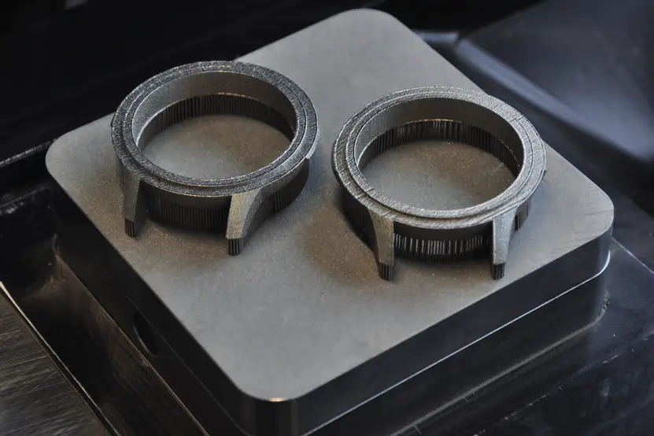
PublireportageCendres+Métaux – Un alliage de compétences pointues et de visions innovantes
Cendres+Métaux – An alloy of highly developed skills and innovative visions
Publireportage
Biopôle – Plus qu'un parc scientifique, une communauté dynamique dans le domaine des sciences de la vie
Biopôle – More than a science park: a vibrant life science community
Publireportage
Centre d'Imagerie Biomédicale – CIBM : une structure de recherche ouverte et ambitieuse en imagerie biomédicale
Publireportage
Ferring International Center SA
Une vision globale par Michel Pettigrew ; un aperçu de notre science par Per Falk
Interview
La Haute Ecole de Santé Vaud au cœur de la cité – Affûtée pour relever les défis du 21e siècle
Entretien avec Mme Mireille Clerc, directrice de HESAV
Publireportage
Innovation « made in Switzerland » – Un test sanguin pour la détection précoce du cancer colorectal
Novigenix SA
Interview
La Caisse cantonale vaudoise de compensation AVS
Interview de Fabienne Goetzinger, Directrice de la Caisse cantonale vaudoise de compensation AVS/AI
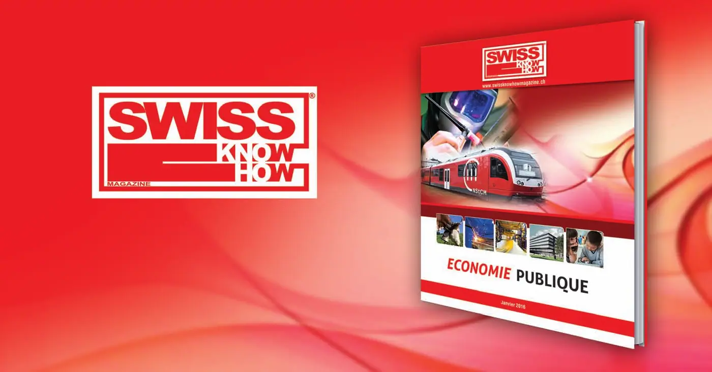
PublireportageÉcole Minerva – Un acteur reconnu de la formation paramédicale
Publireportage
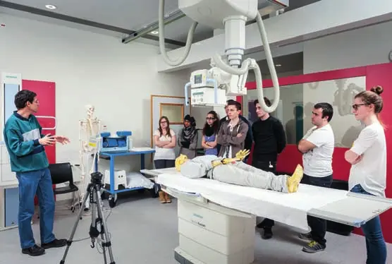
PublireportageHESAV – Haute Ecole de Santé Vaud : un acteur dynamique du système de soins et de la formation
A dynamic player in the healthcare and training system (français et anglais)
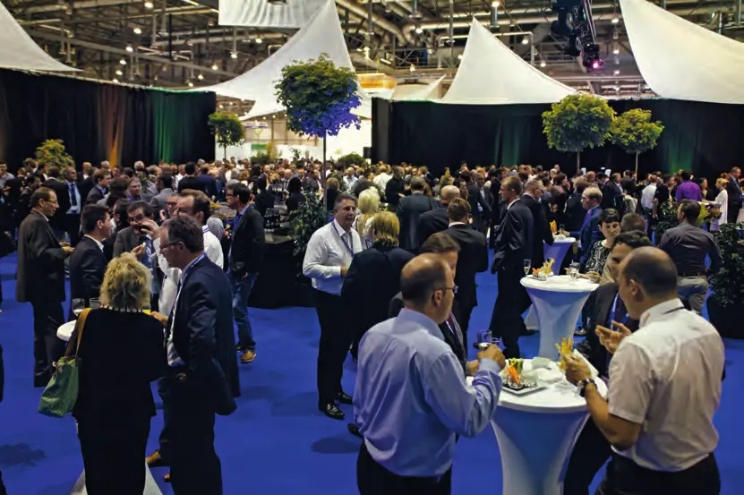
InterviewLe Salon EPHJ-EPMT-SMT à Palexpo du 14 au 17 juin 2016
Interview de Barthélémy Martin, Marcello Ronchietto, André Colard et Olivier Saenger
 Publireportage
PublireportagePosalux SA – L'expert des micro-technologies et du micro-usinage de précision
Posalux SA – The micro technology and precision micro machining expert
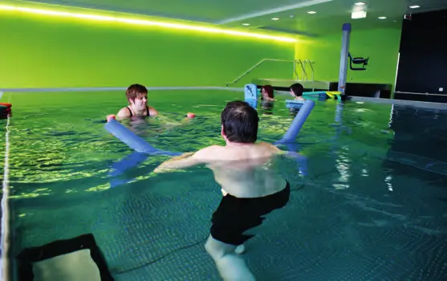
InterviewL'hôpital fribourgeois – Le patient au bon endroit, au bon moment
Entretien avec Mme Claudia Käch, directrice générale de l'hôpital fribourgeois
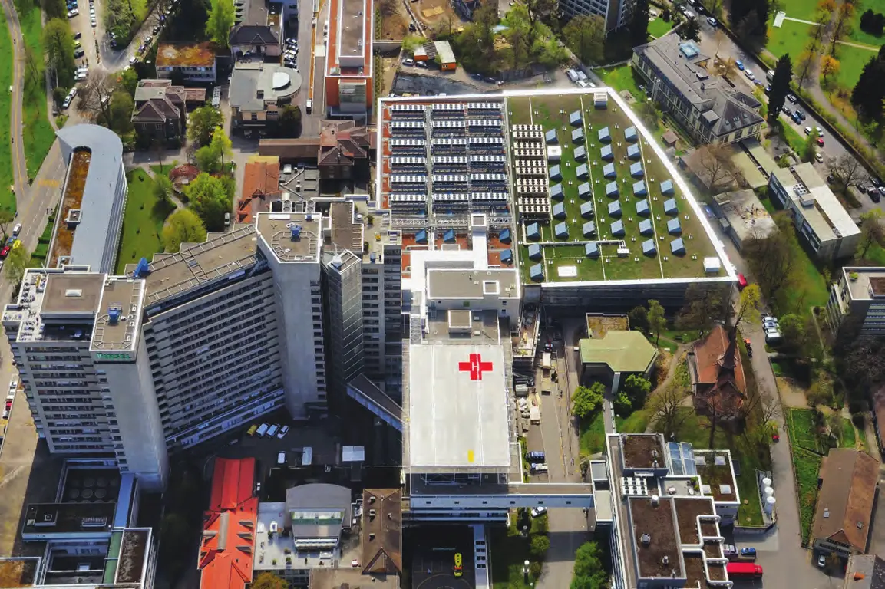
InterviewInselspital – Interview mit Holger Baumann, Vorsitzender der Geschäftsleitung
Fusion avec le Spital Netz Bern et masterplan 2060
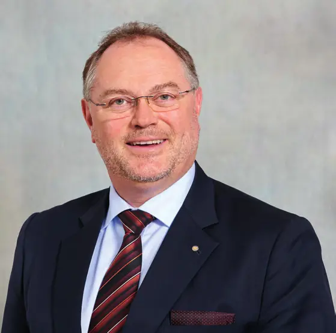
InterviewDie Berner Arbeitgeber – Interview mit Uwe E. Jocham, Präsident
« Beschäftigungsfreundliche Rahmenbedingungen schaffen und sichern »
Publireportage
Carouge – Vieillir dans les meilleures conditions
Résidence Carouge-Centre et Résidence Les Pervenches
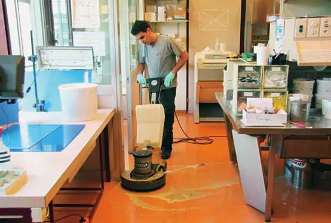
PublireportageMPM facility services SA – Le sérieux qui fait la différence
 Interview
InterviewL'Ensemble Hospitalier de la Côte – Les soins à la portée de tous
Entretien avec le directeur général de l'EHC, M. François Jacot-Descombes
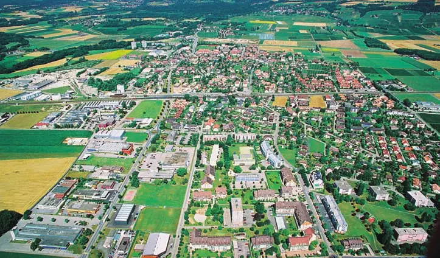
InterviewGland – Une région dynamique et attractive pour les entreprises
Interview de Daniel Collaud, municipal (finances, promotion économique, sports, santé, domaines et forêts)
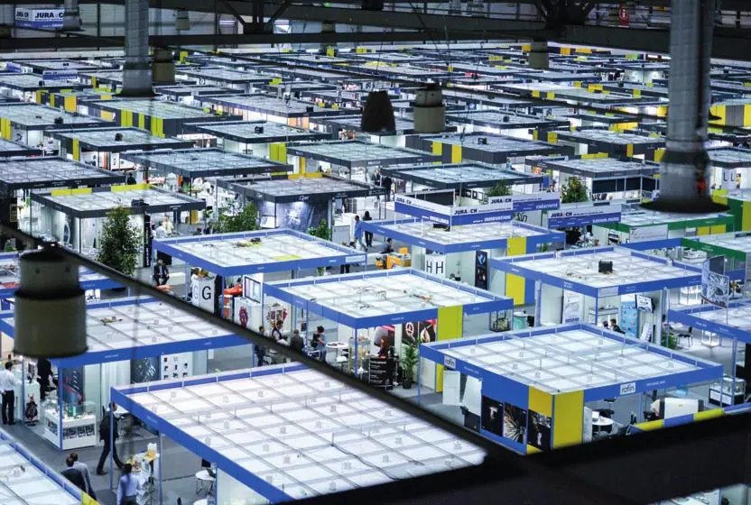
InterviewDu 2 au 5 juin 2015 (7 au 10 juin 2016), le salon EPHJ-EPMT-SMT à Palexpo
Interview des fondateurs, André Colard et Olivier Saenger
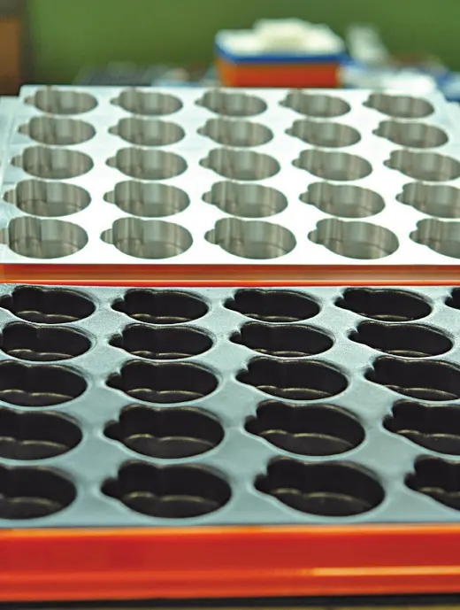
PublireportagePolirapid Swiss SA – Brosses techniques pour un polissage parfait
Polirapid Swiss SA – Technical brushes for perfect polishing
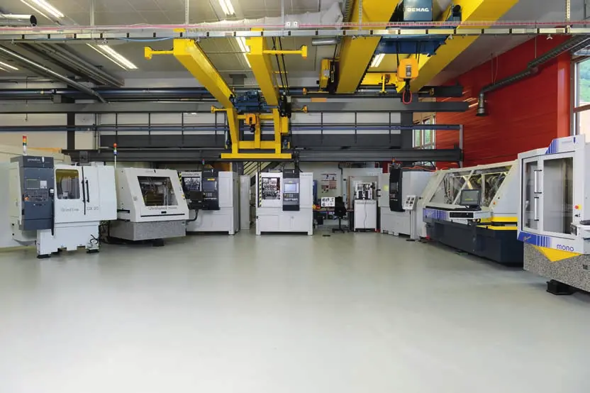
PublireportagePosalux SA – La micromécanique est notre passion
Publireportage
MECANOR SA – L'alliance de la productivité et de la précision
MECANOR SA – Combining precision with productivity
Éditorial
Il Ticino è in salute – Il nodo non è quanto si spende ma come si spende...
di Paolo Beltraminelli, Consigliere di Stato, direttore Dipartimento della sanità e della socialità
Interview
santésuisse – Interview mit Direktorin Verena Nold Rebetez
Interview
Bundesamt für Gesundheit – Interview mit Direktor Pascal Strupler
 Interview
InterviewUniversitätsSpital Zürich – Im Gespräch mit Spitaldirektorin Rita Ziegler
 Interview
InterviewH+ Die Spitäler der Schweiz – Interview mit Charles Favre, Präsident
 Interview
InterviewFASMED – Dachverband der Schweizerischen Handels- und Industrievereinigungen der Medizintechnik
Im Gespräch mit Urs Gasche, Präsident
Interview
Hôpitaux universitaires de Genève – La qualité et l'innovation, un engagement au quotidien
Interview de Bertrand Levrat, Directeur général des HUG
 Interview
InterviewL'EMS, un élément incontournable du réseau de santé
Interview de Pierre Rochat, Président de l'ARODEMS, Directeur de la Fondation Beau-Site
Interview
Pour une médecine humaniste
Interview du Pr. Pierre-François Leyvraz, Directeur général du Centre hospitalier universitaire vaudois (CHUV)
 Interview
InterviewUn centre de compétences pour l'achat, l'approvisionnement et la logistique
Interview de Claude-Alain Rebetez, Directeur de la Centrale d'achats des établissements sanitaires société coopérative (CADES)
 Interview
InterviewKantonsspital Aarau – Interview mit CEO Robert Rhiner
 Interview
InterviewSSCB – Swiss Stem Cell Bank: tra conservazione e ricerca, un impegno a tutto campo sul fronte delle cellule staminali
Intervista a Patrizia Franconi, CEO (version anglaise incluse)
 Publireportage
PublireportageForte impegno nella ricerca, eccellenza clinica e innovazione tecnologica: il Cardiocentro Ticino guarda avanti
Version anglaise incluse : Cardiocentro Ticino looks to the future
PublireportageLo Swiss Institute for Regenerative Medicine (SIRM) di Taverne
Dove la ricerca getta le basi per la medicina del futuro e per lo sviluppo culturale ed economico del territorio (version anglaise incluse)
 Publireportage
PublireportageCosanum – Gemeinsam einen Schritt weiter! / Allons de l'avant ensemble
Publireportage bilingue
Publireportage
Centre de Procréation Médicalement Assistée et d'endocrinologie gynécologique – CPMA SA
Un « hub » unique en Suisse pour la prise en charge de l'infertilité (version allemande incluse)
Interview
Curmed, à la pointe de l'innovation en orthopédie et en traumatologie depuis 1990
Entretien avec David Perron, directeur de la société Curmed AG
Interview
Unispital Basel – Ein starker Partner im Bereich Orthopädie und Traumatologie
Interview mit Privatdozent Dr Geert Pagenstert, Stv. Chefarzt Orthopädische Universitätsklinik Basel
Publireportage
Cité générations – Une maison de santé pluridisciplinaire
 Interview
InterviewFondation Beau-Site – Accompagner la personne âgée en continuum
Interview de Pierre Rochat, Directeur de la Fondation Beau-Site
Interview
Inselspital Universitätsklinik für Hals-, Nasen- und Ohrenkrankheiten, Kopf- und Halschirurgie
Kompetente medizinische Versorgung im gesamten Hals-, Nasen- und Ohrenbereich – Interview mit Prof. Dr. med. Marco Domenico Caversaccio (version française incluse)
 Publireportage
PublireportageUn centre consacré à l'étude du métabolisme
Département de physiologie de l'Université de Lausanne (version anglaise incluse)
Interview
Hôpitaux universitaires de Genève – HUG – Département de santé mentale et psychiatrie
Interview du Professeur Jean-Michel Aubry, Chef du Département (version allemande incluse)
 Interview
InterviewL'Ensemble Hospitalier de la Côte – Un réseau de soins intégrés avant l'heure
Entretien avec le Directeur général de l'EHC, M. François Jacot-Descombes
 Interview
InterviewH-Net AG – Interview mit Michael Ziegler, Geschäftsleiter
 Interview
InterviewHelsinn: Building Quality Cancer Care Together
Interview with CEO Riccardo Braglia (version italienne incluse)
 Publireportage
PublireportageJ.P. Müller AG – Tradition und Kompetenz
 Publireportage
PublireportageMMM Sterilisatoren AG – Die Garantie für perfekt sterilisierte medizinische Instrumente
Version française incluse : La garantie d'instruments médicaux parfaitement stérilisés
 Interview
Interview« Die Entwicklung der Tarifsysteme beeinflusst das Ertragspotenzial »
Interview mit Andreas Mühlemann, Direktor Spital Uster
 Publireportage
PublireportageHumabs BioMed SA – A cure for serious infections developed from former sufferers
 Publireportage
PublireportageMedeco-ch – Le goût de la performance
 Publireportage
PublireportagePoliclinique médicale universitaire Lausanne – Soins de qualité et création de connaissances
Publireportage
Sinomedica, la cultura curativa millenaria cinese e il rigore scientifico occidentale
 Interview
InterviewSpitex Zürich Limmat – Im Gespräch mit CEO Christina Brunnschweiler
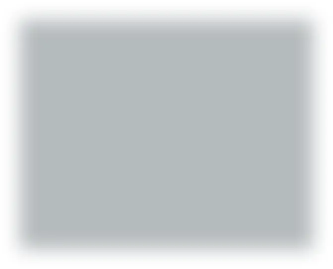
InterviewCentris AG, Solothurn – Interview mit Patrick Progin, CEO
« more than IT » pour les assureurs maladie (version française incluse)
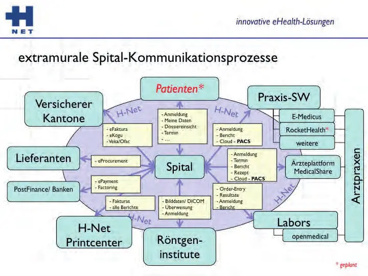
InterviewH-Net AG – Interview mit Michael Ziegler, Geschäftsführer
Services eHealth et dossier électronique du patient
Publireportage
CSS Assurance – Un partenaire qui en vaut la peine à plus d'un titre
Gestion de la santé en entreprise avec vivit
 Interview
InterviewDévelopper des collaborations à l'échelle régionale
Interview de Laetitia Massy, conseillère municipale de Sierre en charge de l'enseignement et des actions sociales
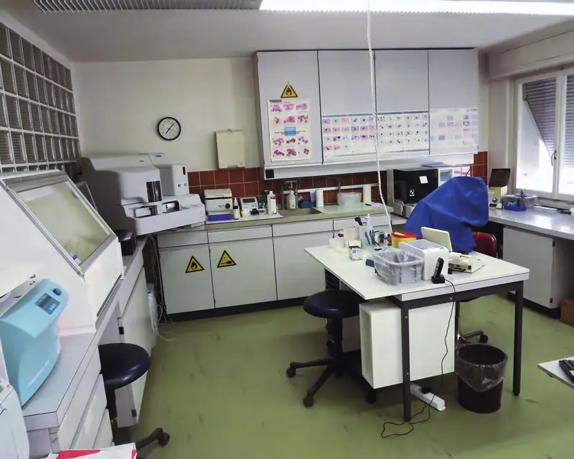
PublireportageLaboratoire d'analyses médicales Dr Luc Salamin – Répondre aux besoins du canton du Valais
Un laboratoire privé et indépendant à Sierre et Sion
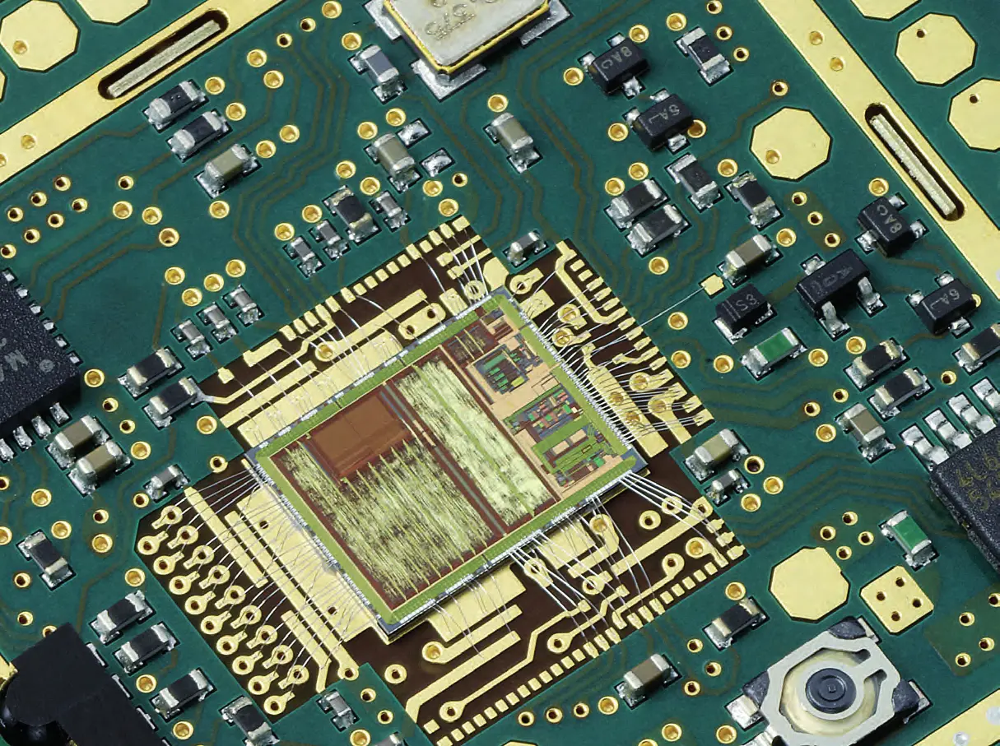
PublireportageHYBRID SA – La microélectronique à votre service !
Assemblage de circuits électroniques miniaturisés
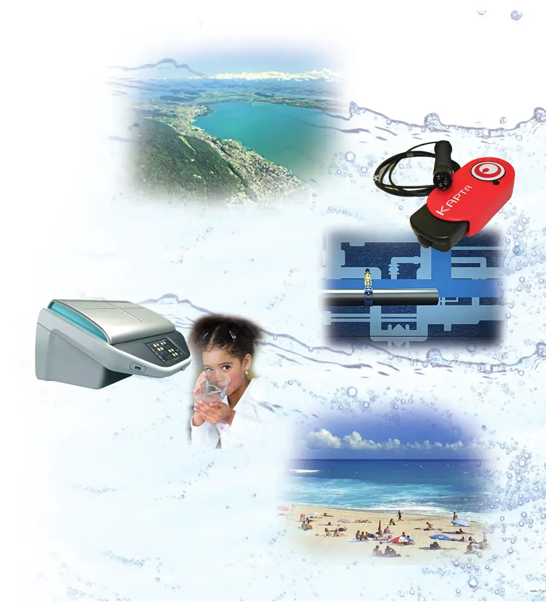
PublireportageENDETEC – NEROXIS : de la source à l'utilisateur, deux outils pour garantir une eau de haute qualité
Monitoring des réseaux d'eau potable
 Interview
InterviewLe canton de Berne, acteur à part entière – « Ce n'est pas la surface qui compte »
Interview avec Monsieur Philippe Perrenoud, conseiller d'Etat bernois francophone
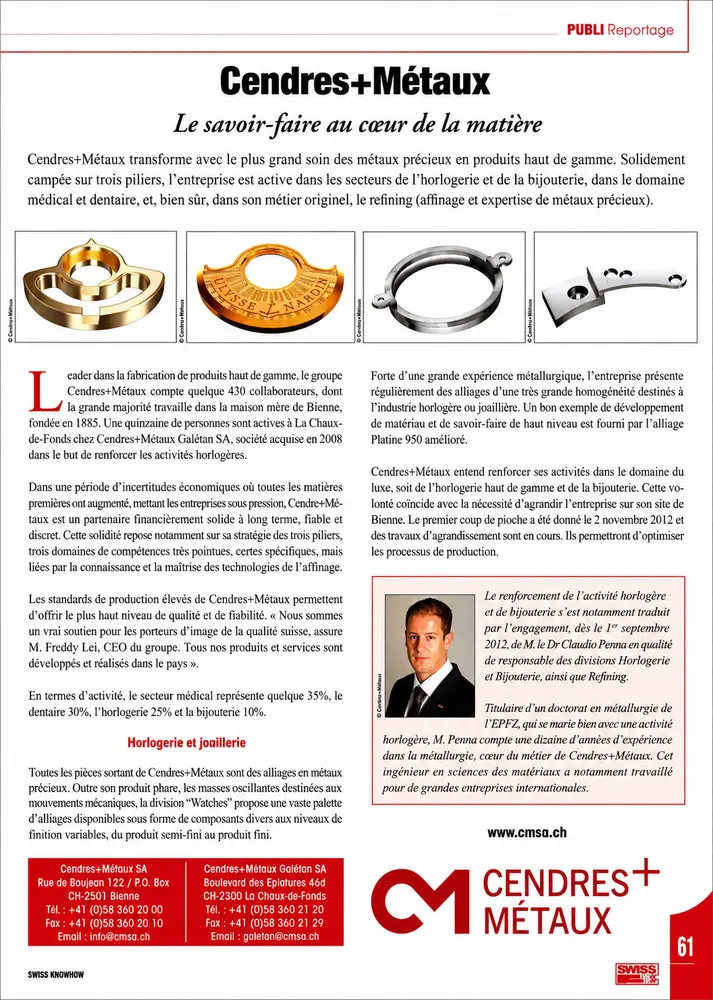
PublireportageCendres+Métaux – Le savoir-faire au cœur de la matière
Horlogerie et bijouterie, médical et dentaire, refining
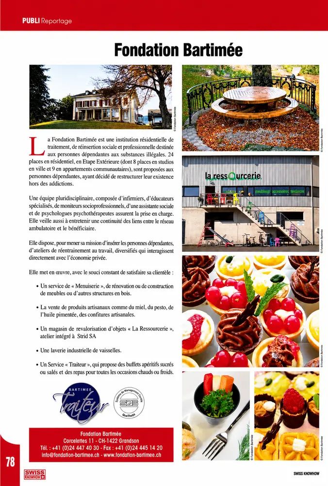
PublireportageFondation Bartimée
Traitement, réinsertion sociale et professionnelle des personnes dépendantes
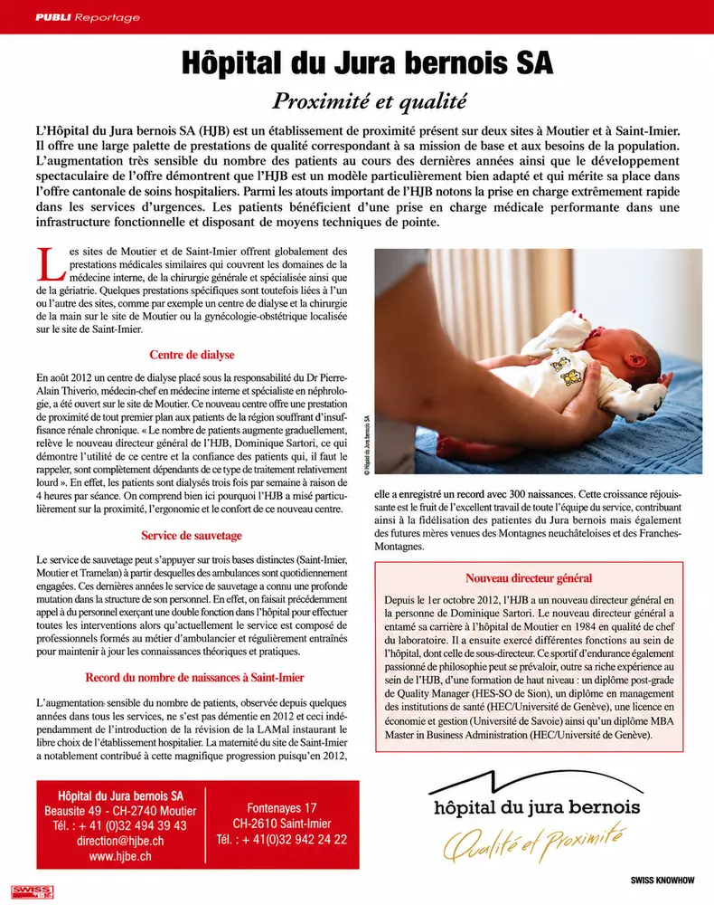
PublireportageHôpital du Jura bernois SA – Proximité et qualité
Hôpital du Jura bernois SA – Nähe und Qualität
Publireportage
Itten+Brechbühl AG – Architekten und Generalplaner
Fragen an Herrn Christoph Arpagaus, Vorsitzender der Geschäftsleitung / Itten+Brechbühl SA – Architectes et planification générale
Publireportage
L. Klein AG, Biel – Edelstähle und Metalle für Kunden in der ganzen Welt
Interview mit Olivier und Philippe Schiess, Geschäftsleiter / Aciers fins et métaux pour nos clients du monde entier
 Publireportage
PublireportageSWIP Saphirwerk Industrieprodukte AG, Brügg – "The Swiss Spirit of Precision"
Interview mit Thomas Jordi, Geschäftsleiter Saphirwerk / « L'esprit suisse de la précision »
 Interview
InterviewH-Net AG – innovative eHealth-Lösungen
Im Gespräch mit Geschäftsführer Michael Ziegler
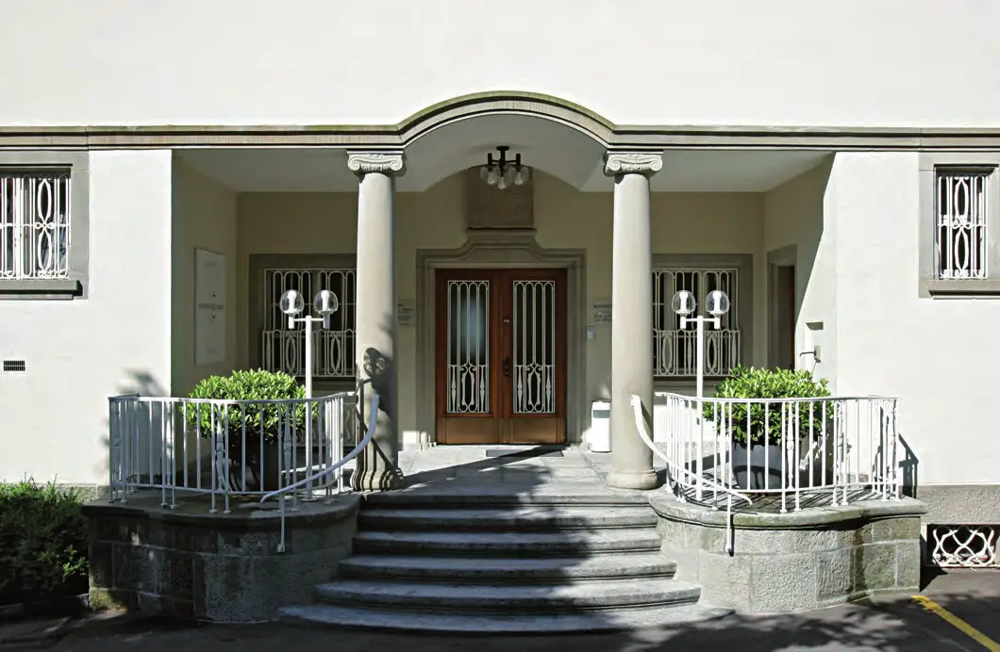
InterviewKlinik Susenberg, Zürich – Umfassende Betreuung in schwierigen Lebenslagen
Interview mit Dr. Christel Nigg, Leitende Ärztin und Dr. Nic Zerkiebel, Chefarzt
 Interview
InterviewMedizinisches Zentrum Römerhof
Im Gespräch mit Dr. med. Galleon Graetz, Facharzt FMH für Innere Medizin
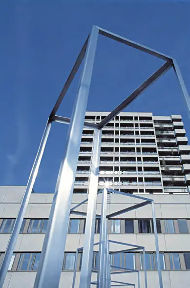
InterviewUniversitätsSpital Zürich
Im Gespräch mit Spitaldirektorin Rita Ziegler
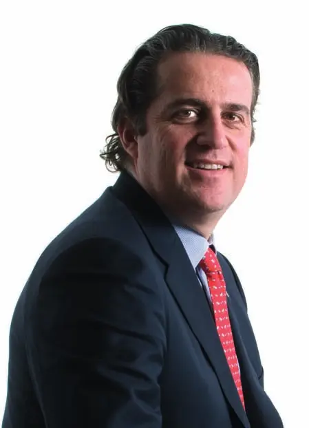
PublireportageHelsinn: plasmare alleanze e sviluppare prodotti farmaceutici
Helsinn: Shaping Alliances, Building Pharmaceuticals – Riccardo Braglia, CEO
Publireportage
Alpex Pharma SA – Development & Manufacturing Fast Release Products from Switzerland
Comprimés orodispersibles et effervescents à Mezzovico
Publireportage
Clinica Hildebrand Centro di riabilitazione Brissago – Costruito attorno all'uomo
Gianni Roberto Rossi, direttore (version anglaise incluse)
Publireportage
Unipharma SA – Esperienza ed efficacia nel reperire ogni tipo di farmaco
Experience and efficiency in sourcing any drug
Publireportage
Medacta International – Leader nel settore delle endoprotesi per anca e ginocchio
Entretien avec Alberto Siccardi, président
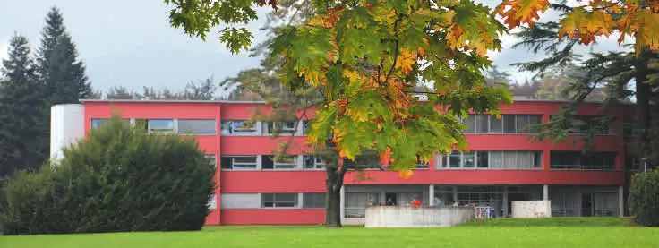
PublireportageOSC – Organizzazione sociopsichiatrica cantonale: disagio psichico, una rete territoriale efficace
Michele Salvini, direttore (version anglaise incluse)
Publireportage
Residenza Rivabella – Un angolo di paradiso in riva al lago di Lugano
Alexandre Aleman, direttore (version anglaise incluse)
 Interview
InterviewLes HUG à l'horizon 2015
Entretien avec M. Bernard Gruson, directeur général (version anglaise : The HUG by 2015)
InterviewLes HUG font peau neuve
Quatre gros chantiers simultanés – avec M. F. Taillard, directeur général adjoint (version anglaise : The HUG gets a facelift)
InterviewUn modèle « d'hôpital vert »
Les HUG en pionniers européens (version anglaise : The model of a "green hospital")
InterviewAu cœur de la Genève internationale
Les HUG s'impliquent dans des projets humanitaires – avec le professeur Louis Loutan (version anglaise incluse)
InterviewL'indispensable « U » des HUG
Une interface nouvelle entre l'Hôpital et la Faculté – avec le professeur Jean-Louis Carpentier (version anglaise incluse)
InterviewSécurité et qualité aux HUG
Souci d'excellence et outils performants pour réduire les risques – avec le Dr Pierre Chopard (version anglaise incluse)
InterviewSur le front de la médecine de premier recours
Les HUG assument leur rôle social en toute transparence – avec le professeur Jean-Michel Gaspoz (version anglaise incluse)
InterviewLe sport entre santé et performance
Une unité médicale performante – avec le Dr Jacques Menetrey (version anglaise incluse)
InterviewInfarctus : diminuer le risque de récidive
Les HUG ont initié le programme ELIPS® à l'échelle nationale – avec le Dr Pierre-Frédéric Keller (version anglaise incluse)
InterviewLa médecine génétique
Genève au cœur d'une révolution médicale – avec le professeur Stylianos Antonarakis (version anglaise incluse)
InterviewLa chirurgie entre dans une nouvelle ère
Les HUG leaders en chirurgie robotique – avec le professeur Philippe Morel (version anglaise : Surgery enters a new era)
DossierGreffes du foie chez l'enfant
Les HUG à la pointe (version anglaise : Liver transplants for children)
InterviewLes anévrismes intracrâniens
@neurIST, un projet porteur d'espoir – avec le Dr Philippe Bijlenga (version anglaise incluse)
InterviewLe laboratoire de virologie
Un centre de référence national – avec le professeur Laurent Kaiser (version anglaise incluse)
Interview« Prometheus » contre Parkinson
Les HUG au centre d'un vaste projet de recherche – avec le professeur Pierre Burkhard (version anglaise incluse)
InterviewLes défis de la psychiatrie
Nouveaux modèles de prise en charge – avec le professeur Pandelis Giannakopoulos (version anglaise incluse)
InterviewLa recherche clinique aux HUG
Un centre au service des chercheurs – avec le professeur Bernard Hirschel (version anglaise incluse)
DossierOncologie : les HUG à la pointe
Un écrin spécialisé pour la recherche – avec le professeur Pierre-Yves Dietrich (version anglaise incluse)
InterviewHUG et EPFL unis contre le cancer
La stratégie du vaccin thérapeutique – avec le Dr Nicolas Mach (version anglaise incluse)
DossierCIBM : une plate-forme de recherche au service de la médecine
Avec le Dr François Lazeyras, directeur du CIBM Genève (version anglaise incluse)
DossierMicroPET : la plate-forme genevoise d'imagerie moléculaire du CIBM
Version anglaise : MicroPET: the Genevan platform for CIBM molecular imaging
Dossier
Un centre d'étude en neurosciences unique en Europe
Brain and Behaviour Laboratory (BBL) – avec le professeur Patrik Vuilleumier, codirecteur
DossierUne formation pour éviter les erreurs au bloc opératoire
Le cours « Crew Resource Management » Swiss-HUG – entretien avec le Dr Domizio Suva
DossierThérapies cellulaires en plein développement
SICT, une fondation qui accélère le mouvement – entretien avec la Dre Marisa Jaconi
DossierOsiriX, l'imagerie médicale en 3D à la portée de tous
Un logiciel libre né aux HUG – professeur Osman Ratib et Dr Antoine Rosset
DossierMaladies rares, nombreuses souffrances
Pour une stratégie nationale – entretien avec la Dre Loredana D'Amato Sizonenko (Orphanet, ProRaris)
 Publireportage
PublireportageAlexion Pharma International
An interview with Patrice Coissac – “Delivering hope, restoring health, enhancing life”
 Publireportage
PublireportageATMOS Medical AG
Entretien avec M. Jacky Noll, directeur
PublireportageCentre d'imagerie biomédicale (CIBM)
Un modèle de collaboration dans le domaine de la recherche
PublireportageLa Croix-Rouge genevoise, au service de la population
Entretien avec Mme Eliane Babel-Guérin, directrice
PublireportageCurmed SA, Ostermundigen
Un partenaire fort en chirurgie de la main, orthopédie et traumatologie – entretien avec M. David Perron, directeur
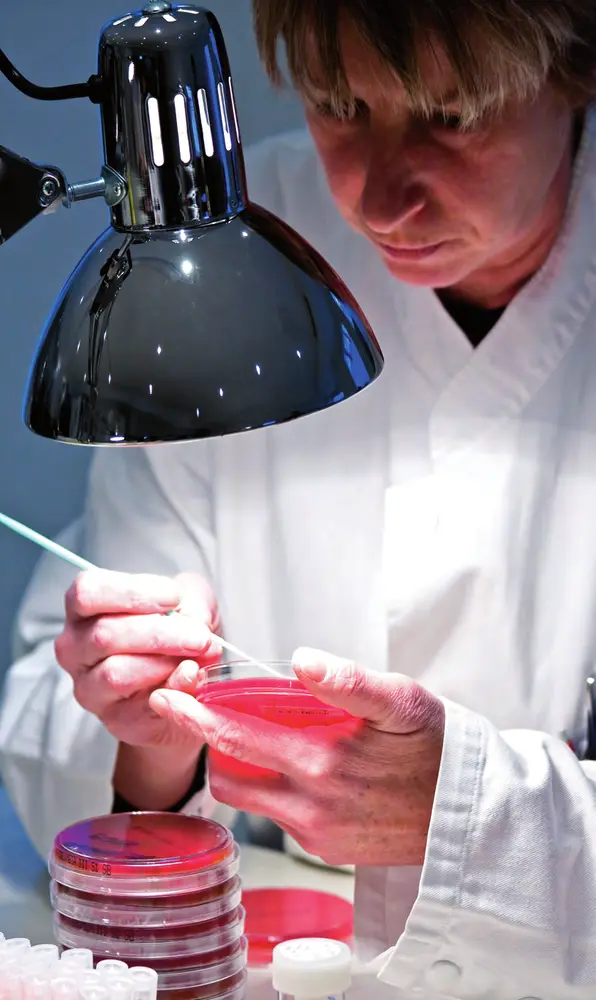
PublireportageDianalabs
Un laboratoire à l'écoute des patients et des médecins
PublireportageID Imagerie & Développement : qualité, disponibilité et service
Instituts Imagerive et Radiologie La Colline
PublireportageMayBa.ch, le spécialiste en stérilisation hospitalière
Avec Stéphane Mayor et Ralf Bachman, fondateurs
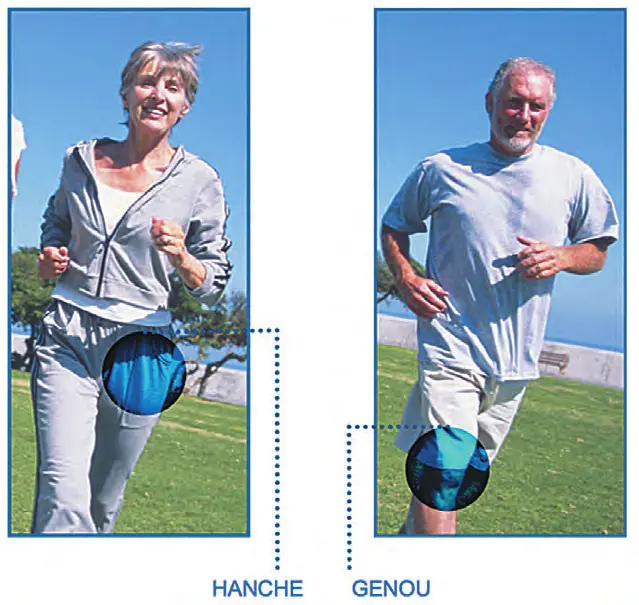
PublireportageMedacta International
Une vie meilleure grâce aux progrès orthopédiques
PublireportageMedicatech
Entretien avec M. Stéphane Andrist
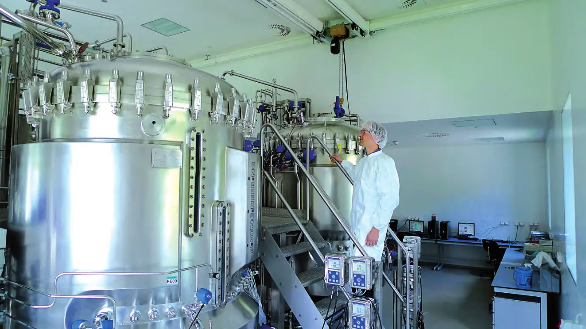
PublireportageMerck Sharp & Dohme AG (MSD) Switzerland
“Well being and good health is our mission” – interview with Adriaan Ruijs, Managing Director
PublireportageMMM Sterilisatoren AG – Tradition und Innovation
Ein Gespräch mit Kamel Henni, Geschäftsführer
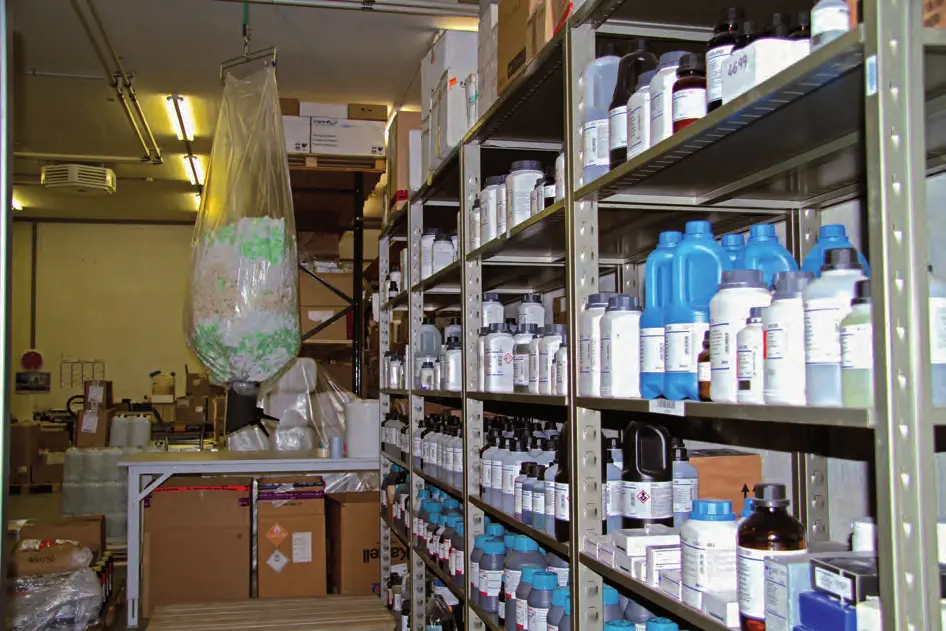
PublireportageReactolab SA
Une distribution multiqualitative et personnalisée
PublireportageLa radiologie est un secteur médical ultra-spécialisé
Entretien avec le professeur Frank Pilleul, radiologue au sein de Rive Droite SA
 Publireportage
PublireportageSCA Hygiene Products AG – Der unangefochtene Inkontinenz-Spezialist
Im Gespräch mit Franco Cesario, Sales Director Schweiz
PublireportageSIPAEC SA
Une gamme complète de produits et de machines de nettoyage
PublireportageTRB Chemedica International SA : le patient d'abord...
La relève : Alessandro Di Napoli, vice-président Marketing
 Publireportage
PublireportageTornier AG
Entretien avec M. Christian Beyeler, directeur – Des spécialistes au service de spécialistes
Publireportage
Industrial property and health
Interview with Mr Jean-Alain Schulz – Bugnion SA, conseils en propriété intellectuelle
Publireportage
Gets Medical Safety Systems SA
Le leader en appel malade
 Publireportage
PublireportageMy Private Care
Entretien avec Mme Florence Baudoin, directrice
Publireportage
AS Ambulances Services SA
Urgence, transport préhospitalier et rapatriement
Publireportage
Medileg SA
Entretien avec Mme Françoise de Peyerimhoff, directrice
Entreprises
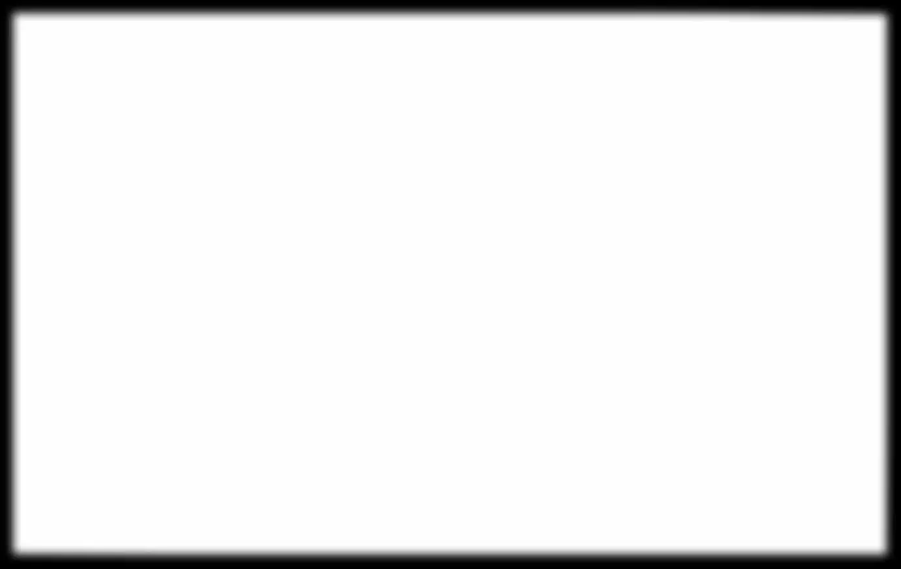
Admo Plastique SA
Injection thermoplastique de précision
AJS SA
Alexion Pharma International Sàrl
Biopharmaceutique (maladies ultra-rares)
Alpex Pharma SA
Développement et fabrication pharmaceutique
ARODEMS – Association romande et tessinoise des directeurs d'établissements médico-sociaux
Association professionnelle des directeurs d'EMS
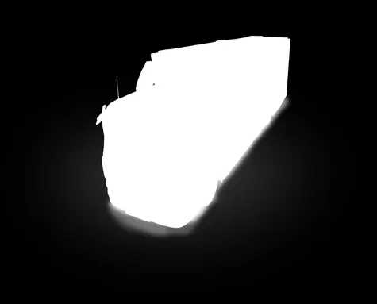
Arthrex Swiss AG
Implants et instruments de chirurgie orthopédique
AS Ambulances Services SA
Service d'ambulances et de transport de patients
ATMOS Medical AG
Distribution d'équipements médicaux (ORL, gynécologie, chirurgie)
B. Braun Medical AG
Produits et services médicaux
BA ConsultinG SA
Ingénierie des installations sanitaires et apparentées
Biopôle SA
Parc des sciences de la vie
BP-Conseils
Conseil en organisation et management des institutions de soins
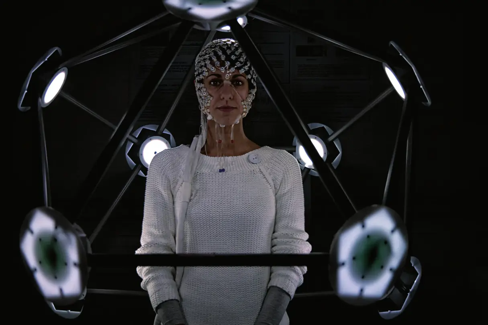
Brain and Behaviour Laboratory (BBL)
Centre de recherche en neurosciences
Bugnion SA
Conseils en propriété intellectuelle
Bundesamt für Gesundheit (BAG)
Administration fédérale de la santé publique
Caisse cantonale vaudoise de compensation AVS (CCVD)
Assurances sociales – institution de droit public
Caisse des Médecins Société coopérative
Facturation et gestion des débiteurs pour professionnels de santé
Canton de Berne – Délégation du Conseil-exécutif pour les affaires jurassiennes, Chancellerie d'État
Administration cantonale
Cardiocentro Ticino
Centre de cardiologie et chirurgie cardiaque
CENDRES+MÉTAUX SA
Produits en métaux précieux, medtech et luxe
Centrale d'achats des établissements sanitaires société coopérative (CADES)
Centrale d'achats et logistique pour établissements de santé

Centre d'Imagerie Biomédicale – CIBM
Recherche en imagerie biomédicale
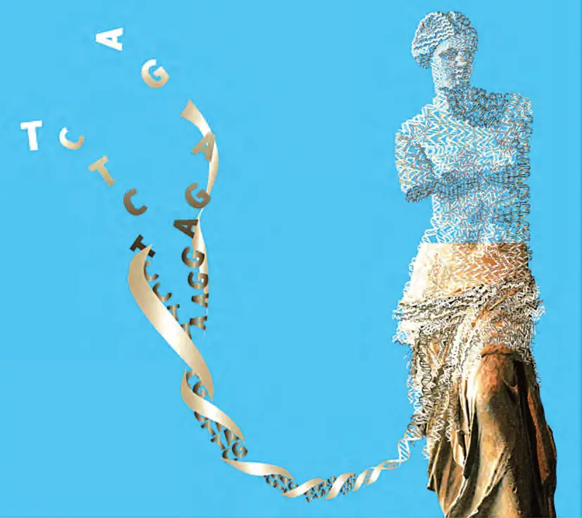
Centre de médecine universitaire CMU – Département de médecine génétique et développement
Recherche et diagnostic en médecine génétique
Centre hospitalier universitaire vaudois (CHUV)
Hôpital universitaire

Centre Laser Victor Hugo
Non précisé
Centris AG
Externalisation informatique pour assureurs maladie
Chemie Brunschwig AG
Fournitures pour laboratoires et production
Cité générations – maison de santé
Centre médical pluridisciplinaire
Cleanplanet
Méthodes et produits d'hygiène et de désinfection
Clinica Hildebrand Centro di riabilitazione Brissago
Clinique de réadaptation
Cosanum AG
Logistique de santé
CPMA sa – Centre de Procréation Médicalement Assistée
Procréation médicalement assistée et endocrinologie gynécologique
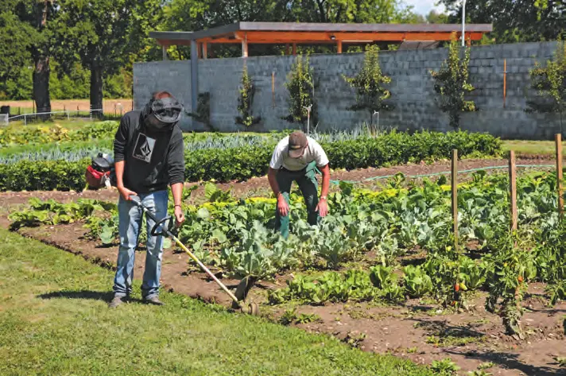
Croix-Rouge genevoise
Association humanitaire et sociale
CSS Assurance (agence de Sion)
Assurance maladie et accidents

Curmed AG
Distribution d'implants orthopédiques
Daler-Spital (Hôpital Daler)
Clinique privée
Datamed
Informatique médicale
Département de physiologie – Université de Lausanne
Département universitaire de recherche en physiologie et métabolisme
Dianalabs
Laboratoire d'analyses médicales
Die Berner Arbeitgeber – Verband der Arbeitgeber Region Bern (VAB)
Association patronale
Dipartimento della sanità e della socialità (Canton Ticino)
Administration cantonale de la santé et des affaires sociales
Ecole Minerva Sàrl
École de formation paramédicale
École polytechnique fédérale de Lausanne (EPFL)
Haute école polytechnique
ECONS SA
Conseil en environnement et santé dans le bâtiment
ENDETEC – Neroxis SA
Monitoring de la qualité de l'eau
Ensemble Hospitalier de la Côte (EHC)
Hôpitaux et EMS
EPHJ – Salon international de la haute précision
Salon professionnel
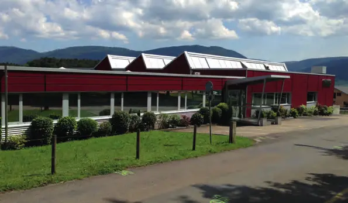
ERMA BOÉCOURT SA
Façonnage de verres de montres en saphir
Etameca SA
Mécanique de précision (sous-traitance)
FASMED – Dachverband der Schweizerischen Handels- und Industrievereinigungen der Medizintechnik
Faîtière de la technique médicale
Ferring International Center S.A.
Industrie pharmaceutique
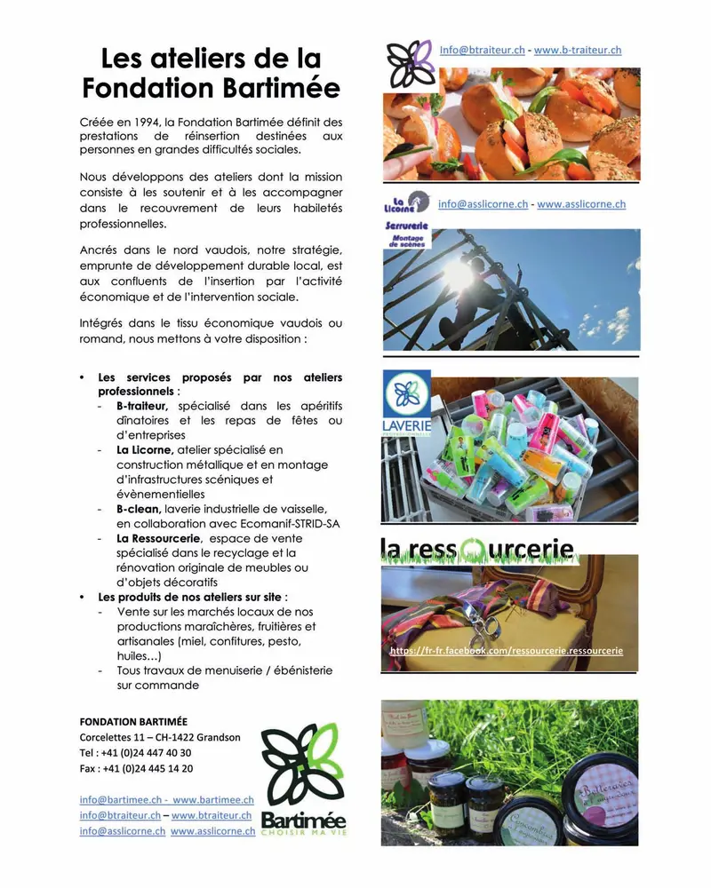
Fondation Bartimée
Institution de traitement et de réinsertion des personnes dépendantes
Fondation Beau-Site
Établissements médico-sociaux
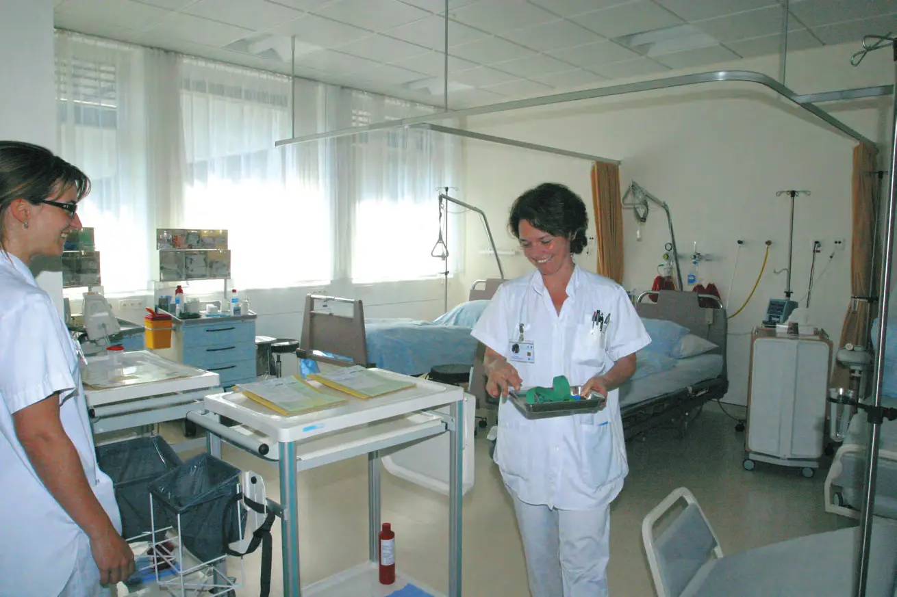
Fondation Dr Henri Dubois-Ferrière Dinu Lipatti
Fondation de soutien à la recherche contre le cancer
Fondation L'étrive
Atelier socio-professionnel, conditionnement horloger

Fondation OsiriX
Fondation (logiciel libre d'imagerie médicale)
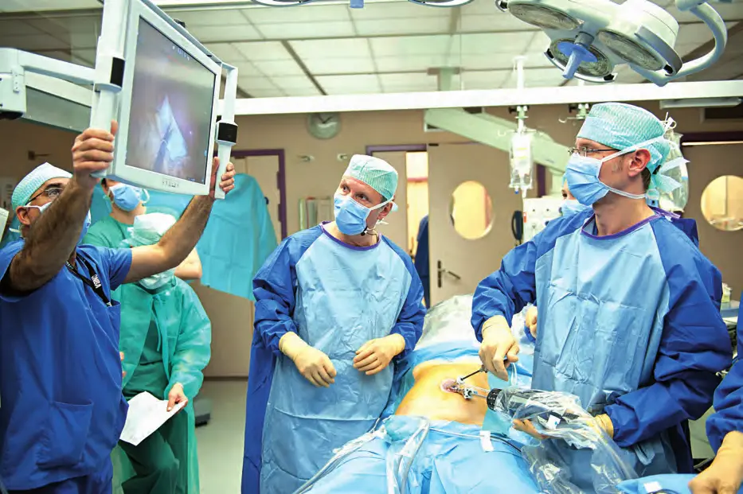
Fondation pour les Nouvelles Technologies Chirurgicales (FNTC)
Fondation de recherche en technologies chirurgicales
Gets Medical Safety Systems SA (Gets MSS)
Systèmes d'appel malade et de sécurité
H-Net AG
Logiciels eHealth et échange de données médicales
H+ Die Spitäler der Schweiz
Faîtière des hôpitaux, cliniques et institutions de soins
Haute Ecole de Santé Vaud (HESAV)
Haute école de santé
Helsinn Group
Groupe pharmaceutique – soins de support en oncologie
HFR – Hôpital fribourgeois / freiburger spital
Hôpital public cantonal
Hôpital du Jura bernois SA
Hôpital régional
Hôpitaux universitaires de Genève – HUG
Hôpital universitaire
Humabs BioMed SA
Biotechnologie – anticorps thérapeutiques
HYBRID SA
Assemblage microélectronique
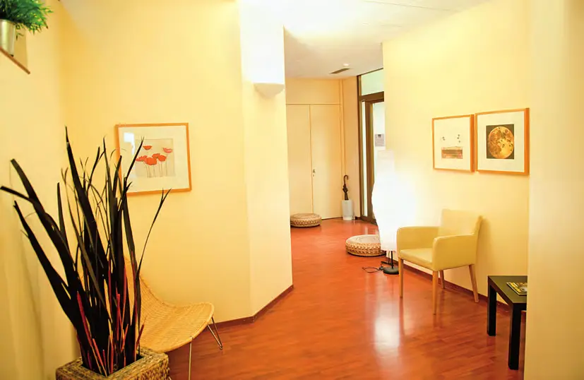
ID Imagerie & Développement (Imagerive et Institut de radiologie de la Colline)
Imagerie médicale
Inselspital – Universitätsklinik für Hals-, Nasen- und Ohrenkrankheiten, Kopf- und Halschirurgie
Clinique universitaire ORL
Inselspital Bern – Universitätsspital Bern
Hôpital universitaire
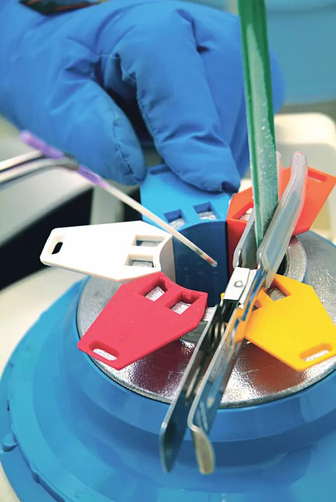
Institut suisse de thérapies cellulaires (Swiss Institute of Cell Therapies, SICT)
Fondation de recherche en thérapies cellulaires
Itten+Brechbühl AG / SA
Architecture et planification générale
J.P. Müller AG
Systèmes de marquage textile et techniques d'assemblage du bois
Johnson & Johnson AG
Produits et dispositifs médicaux
Kantonsspital Aarau (KSA)
Hôpital cantonal
Kessler & Co SA
Conseil en risques, assurances et prévoyance

Klein AG
Aciers fins et métaux
Klinik Susenberg
Clinique de gériatrie aiguë, réadaptation oncologique et soins palliatifs
Laboratoire d'analyses médicales Dr Luc Salamin S.A.
Laboratoire d'analyses médicales
Les Blanchisseries Générales LBG SA
Gestion globale du linge professionnel
Ligues de santé du canton de Fribourg
Associations de soutien aux personnes atteintes de maladies chroniques

Marflow AG
Matériel médical pour l'urologie et la gastro-entérologie
MaxiVAX
Start-up biotechnologique – vaccins thérapeutiques

MayBa.ch SA
Stérilisation hospitalière
MECANOR SA
Outils d'étampage et pièces découpées de précision
Medacta International
Dispositifs médicaux orthopédiques
Medeco-ch Sàrl
Distribution d'implants d'orthopédie et de traumatologie

Medicatech Sàrl
Maintenance et réparation d'instruments chirurgicaux
Medileg SA
Distribution de bas de compression et produits orthopédiques
Medizinisches Zentrum Römerhof (MZR)
Centre médical
Merck Sharp & Dohme AG (MSD)
Industrie pharmaceutique
MMM Sterilisatoren AG
Systèmes de stérilisation et de désinfection
MPM facility services SA
Nettoyage et facility services
My Private Care Sàrl
Soins à domicile privés
Novigenix SA
Biotechnologie – diagnostic
Opale Solutions SA

Orphanet Suisse – Service de médecine génétique (HUG)
Information sur les maladies rares
Policlinique médicale universitaire Lausanne (PMU)
Médecine générale et communautaire universitaire
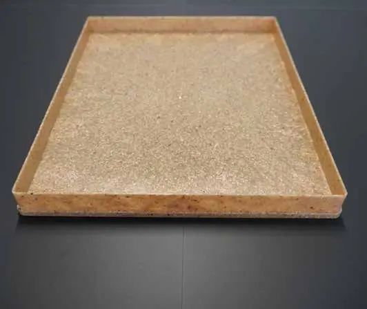
Polirapid Swiss SA
Fabrication de brosses techniques

Posalux SA
Machines-outils de micro-usinage
ProRaris, Alliance des maladies rares – Suisse
Association faîtière de patients

Protofil Sàrl
Électroérosion à fil et micro-usinage
Reactolab SA
Distribution de produits chimiques et de matériel de laboratoire
Réseau fribourgeois de santé mentale (RFSM)
Psychiatrie et santé mentale
Résidence Carouge-Centre
Logements encadrés pour personnes âgées
Résidence Les Pervenches
EMS
Residenza Rivabella
Résidence de repos, convalescence et soins

Ressorts Industriels SA (RISA)
Ressorts de haute précision

Rive Droite SA
Imagerie médicale et radiologie interventionnelle
Ryf AG
Microscopie industrielle et systèmes de mesure
santésuisse
Faîtière des assureurs-maladie
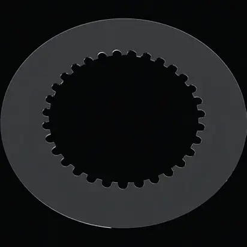
Saphirwerk AG
Usinage de matières dures (saphir, céramique, pierres)
SCA Hygiene Products AG
Produits d'hygiène et d'incontinence (TENA)
Sinomedica Sa
Centres médicaux d'acupuncture et de médecine traditionnelle chinoise

SIPAEC SA
Produits et machines de nettoyage professionnel
Spital Uster
Hôpital régional
Spitex Zürich Limmat
Aide et soins à domicile
SWIP Saphirwerk Industrieprodukte AG
Usinage de céramiques techniques, saphir et rubis
Swiss Institute for Regenerative Medicine (SIRM)
Recherche en médecine régénérative
Swiss Stem Cell Bank Sa (SSCB)
Biobanque de cellules souches
Swisscom SA
Télécommunications et services IT pour la santé
Techno-Synthetic SA
Micro-injection plastique

TechnoFormage SA
Emballages thermoformés et injectés
Tectri SA
Usinage complexe de pièces tournées et fraisées
Tornier AG
Dispositifs médicaux orthopédiques (extrémités)
TRB Chemedica
Laboratoire pharmaceutique (ophtalmologie, rhumatologie, neurologie)
Trigonorm AG (Trigonorm SA)
Rayonnages et aménagements de stockage sur mesure
Ufficio per lo sviluppo economico – Dipartimento delle finanze e dell'economia (DFE), Cantone Ticino
Administration cantonale (promotion économique)
Unipharma SA
Importation et distribution de médicaments
Universität Bern – Rektorat
Université
Universitätsspital Basel – Orthopädische Universitätsklinik
Hôpital universitaire – orthopédie et traumatologie
UniversitätsSpital Zürich (USZ)
Hôpital universitaire
Université de Fribourg
Université – formation et recherche en médecine
Université de Genève – Faculté de médecine
Faculté universitaire de médecine
Ville de Gland
Commune
Ville de Sierre
Administration communale
VitalRh Sàrl
Recrutement et placement de personnel médical
Aucun résultat.
Magazines
Tous les PDF

Économie régionale · 2015
Swiss Knowhow – Fribourg, Berne-Bienne et Tessin (mai 2015)


Économie régionale · 2013
Swiss Knowhow – Zürcher Wirtschaft / Zurich Economy (2013)

Économie régionale · 2012
Swiss Knowhow – Camera di commercio del Cantone Ticino (Cc-Ti) (2012)